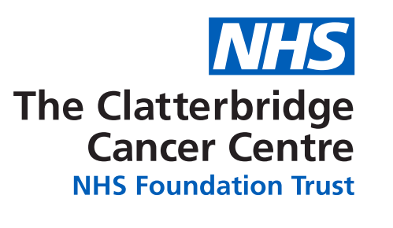

My Portfolio
Software and AI Engineer
By Nirmal Eswar Vee



Software and AI Engineer
By Nirmal Eswar Vee
My journey into the world of technology began with a fascination for how software can solve real-world problems. This interest grew when I started experimenting with various programming languages and frameworks, leading me to pursue a degree in Computer Science with a focus on Artificial Intelligence at the University of Sheffield.
My passion for software development and AI was further ignited during my academic projects and internships. I particularly enjoyed working on machine learning models and developing software solutions that can analyze data and provide actionable insights. This hands-on experience has cemented my belief that a strong foundation in both software development and AI is crucial for creating innovative and efficient solutions.
My key areas of interest include developing scalable software systems, optimizing algorithms, and leveraging AI techniques to address complex challenges. I am a firm believer that mastering these areas is essential for making a significant impact in the tech industry. I am also enthusiastic about supporting the advancement of technology through continuous learning and professional development.
Traits I take pride in include a relentless drive for innovation, a passion for tackling challenging problems, and a commitment to delivering high-quality solutions that are both impactful and user-friendly.
University of Sheffield
I am currently pursuing a Bachelor of Science degree in Computer Science and Artificial Intelligence at the University of Sheffield. The program provides a strong foundation in both theoretical and practical aspects of computer science, with a focus on AI techniques and technologies.
Developed a chatbot using Python and NLP techniques to assist students with course-related queries.
View on GitHubBuilt a predictive model using Python and Scikit-learn to analyze factors affecting student success.
View on GitHubCreated a responsive portfolio website using HTML, CSS, and JavaScript to showcase my projects and skills.
View on GitHubClatterbridge Cancer Centre Business Intelligence department - Summer 2024
University of Sheffield - AI Lab - 2022